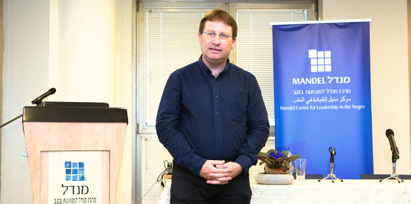

Against the backdrop of the coronavirus epidemic and the lockdown in Israel, fellows of the Mandel Program for Regional Leadership in Kseifa and Arara BaNegev have continued their study in working groups, which has become more relevant and necessary in light of the new challenges facing Negev Bedouin society during this complicated period.
The three working groups – dedicated to health, education, and civil society – are continuing their study of the issues they selected at the start of their second year of study as the focus for a series of position papers. These issues have proven to be highly relevant to the new challenges posed by the COVID-19 virus.
The education working group, which chose to focus on increasing parental engagement in schools, has emphasized how crucial this issue has become during the period of the lockdown.
The health working group, which hosted a Mandel Negev Platform event on health-related challenges in Bedouin Arab society in the Negev before the pandemic, is leveraging the knowledge gained from that event and using it as the basis for a position paper. It is also integrating the insights gained from the way that Bedouin society dealt with the health challenges of the coronavirus experience.

Professor Nadav Davidovitch at the Mandel Platform event on improving quality of life in Arab Bedouin society that was convened in February 2020
The health workgroup also held a Zoom consultation with Professor Nadav Davidovitch, an epidemiologist and public health expert who heads the department of health systems management at Ben-Gurion University of the Negev. Professor Davidovitch spoke about the challenges posed by the virus in general and for the Negev in particular. The members of the group then shared their impressions of the situation in the Bedouin Arab community, and put forward recommendations for how to tackle these challenges during the crisis.
The civil society workgroup is working to promote frameworks for young adults that will increase awareness of various issues among young people in Negev Bedouin Arab society. This working group sees the heightened social engagement of young adults during the coronavirus crisis as an opportunity for strengthening civil society in the Negev Bedouin community.
The significant learning that has emerged from the field and from the mapping that was done by the three working groups prior to the crisis has proven to be highly relevant to the period of the crisis itself. With the help of their tutors, the fellows are continuing their intensive work on preparing their position papers.
{kind=link}
{kind=link}